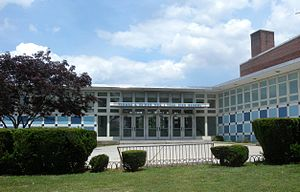

Thomas A. Edison High School (Jamaica)
Thomas A. Edison Career and Technical Education High School (often referred to locally simply as Edison) is a public secondary school in Queens's Jamaica Hills community in New York City. It is one of the few public high schools in New York City to offer vocational training programs as well as traditional college preparatory tracks and well known for its largely male population. The school is operated by the New York City Department of Education.
The campus is located near the top of a fairly steep hill at the corner of 168th St. and 84th Ave., and sits on the south side the Grand Central Parkway; it is situated diagonally across the parkway, southwest from St. John's University. Hillside Avenue, at the foot of the hill, is several blocks to the south.